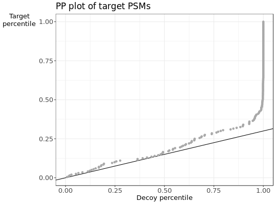

Creates PP plot of two empirical distributions.
PPplot(score, label, pi0 = 0, score_higher = TRUE, title = "PP plot of target PSMs", xlab = "Decoy percentile", ylab = "Target\npercentile")
| score | vector of quantiles of distribution 1 and 2 |
|---|---|
| label | vector of logical values. TRUE if score belongs to distribution 1 |
| pi0 | mixture coefficient of distribution 1 in distribution 2 |
| score_higher | TRUE if a higher score means a better PSM. |
| title | main title. |
| xlab | label on x-axis. |
| ylab | label on y-axis. |
ggplot object
## Simulate a dataset with 140 correct target subset PSMs, 60 incorrect target subset PSMS, ## 60 decoy subset PSMs and 2000 additional decoy PSMs. set.seed(10) d = sample_dataset(H1_n = 140,H0_n = 60, decoy_n = 60 ,decoy_large_n = 2000) ##pi_0 can be estimated with the target-decoy approach pi0 = sum(d$decoy & d$subset)/sum(!d$decoy & d$subset) PPplot(d$score, d$decoy, pi0)